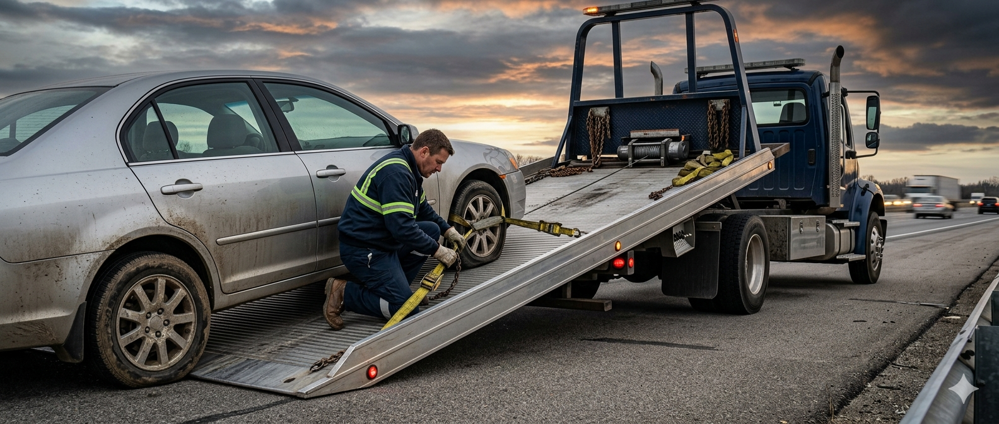
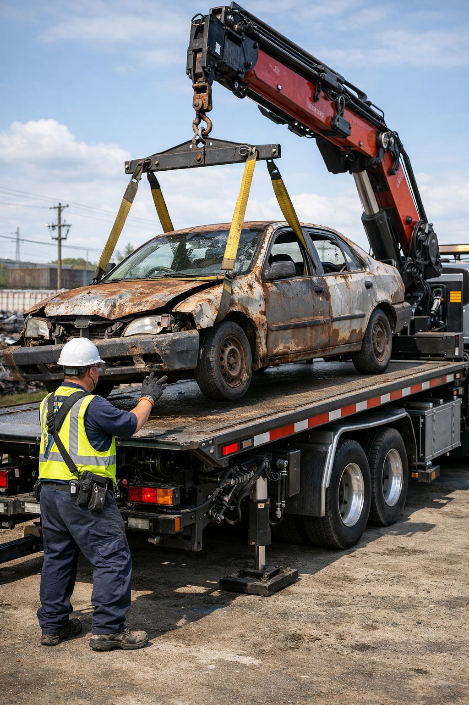
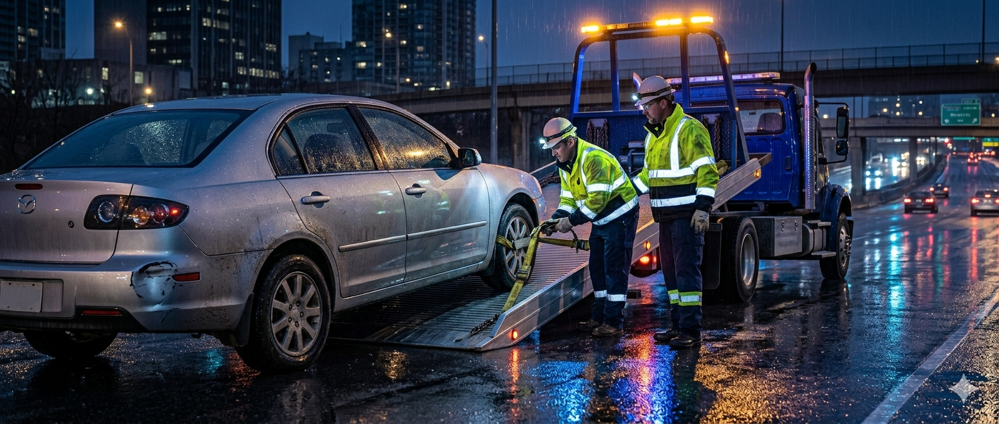
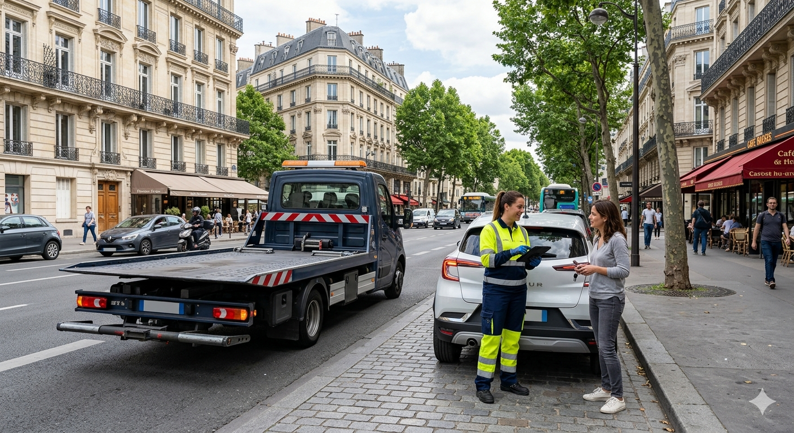

Dépannage sur place
Batterie, panne légère, véhicule bloqué, roue crevée ou petite intervention d’urgence.
Defa Dépanne intervient avec réactivité pour vous aider en cas de panne, accident, crevaison, batterie à plat ou véhicule immobilisé. Un service simple, direct et rassurant, pensé pour donner confiance dès la première visite.

Batterie, panne légère, véhicule bloqué, roue crevée ou petite intervention d’urgence.

Transport sécurisé vers votre garage, votre domicile ou l’adresse de votre choix.

Prise en charge de véhicules hors d’usage avec une organisation simple et rapide.

Support après incident, sécurisation du véhicule et remorquage adapté à la situation.
Intervention pour aider les conducteurs à reprendre la route dans les meilleurs délais.

Une présence pensée pour les besoins des automobilistes d'Île-de-France et des alentours.
Le design sombre donne une image plus forte et plus moderne. Les contrastes permettent de mettre en valeur le numéro, les services et les appels à l’action sans surcharger la page.
Le contenu est structuré comme un vrai site professionnel : promesse claire, preuves de sérieux, services détaillés, avis clients et formulaire visible. C’est idéal pour convertir les visiteurs en appels.

Le client explique le problème et donne sa localisation.
On identifie le type d’assistance nécessaire pour préparer l’intervention.
Une dépanneuse se rend sur place dans les meilleurs délais.
Remorquage, dépannage ou enlèvement selon la situation.

“Intervention rapide et très bon contact. Le véhicule a été pris en charge sans stress.”

“Site propre, clair et rassurant. On comprend tout de suite le service proposé.”

“Très bon rendu visuel. Le thème sombre donne un vrai côté premium.”

“Service vraiment réactif, j’ai été dépannée en moins de 30 minutes. Un grand merci !”

“Très professionnel, le remorquage s’est fait sans aucun souci et le dépanneur était aimable.”

“J’ai appelé le soir, ils sont venus rapidement. Devis clair, intervention efficace.”
Oui, la page met en avant une disponibilité 24h/24 et 7j/7.
Oui, tu peux présenter un remorquage local ou longue distance selon ton activité.
Oui, le formulaire et le bouton d’appel servent à déclencher une demande immédiate.
Oui, le site met en avant Île-de-France et les alentours en région parisienne.
Nos tarifs sont clairs et sans surprise. Le coût dépend de la distance et du type d’intervention (dépannage simple, remorquage, enlèvement). Un devis gratuit vous est communiqué par téléphone avant tout déplacement.
Oui, nous prenons en charge voitures particulières, deux-roues, utilitaires légers et camping-cars. Pour les poids lourds, contactez-nous, nous vous orienterons vers un partenaire adapté.
Restez en sécurité derrière les glissières, allumez vos feux de détresse, placez le triangle de signalisation, puis appelez-nous. Nous contacterons les forces de l’ordre si nécessaire et organiserons le remorquage de votre véhicule.
Oui, la plupart des contrats d’assurance auto incluent une assistance dépannage et remorquage. Nous vous fournissons une facture détaillée que vous pouvez transmettre à votre assureur pour remboursement.
Oui, nous acceptons les espèces, la carte bancaire et les virements. Un règlement est demandé à la fin de l’intervention, sauf si une prise en charge directe par votre assurance est possible.
Notre objectif est d’intervenir sous 30 à 60 minutes en Île-de-France, selon la circulation et votre localisation. En heure creuse, nous pouvons être sur place en 20 minutes.
Bien sûr. Après remorquage, nous vous déposons à l’adresse de votre choix (domicile, garage, loueur de véhicule) dans la limite de la zone d’intervention.
Si la panne nécessite une réparation en atelier, nous proposons le remorquage vers le garage de votre choix. Nous pouvons aussi vous recommander un garagiste de confiance partenaire.
Remplissez le formulaire ou appelez directement pour une intervention rapide. Notre équipe est à votre écoute 24h/24.